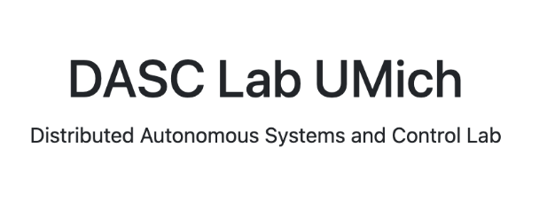
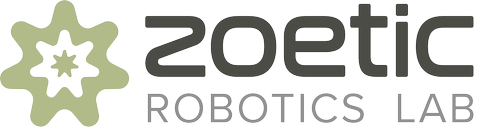
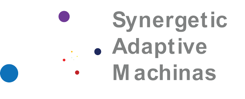

I am a graduate student in Mechanical Engineering (Robotics) at the University of Michigan in the USA. I graduated from the University of Nottingham in the UK with a first-class honours degree in Mechanical Engineering. My interests span safe planning and control, aerial autonomy, perception, and the mechanical design of robotic systems.
At Michigan, research spans multi-agent aerial systems in the Distributed Autonomous System and Control (DASC) Lab, pneumatic micro-actuation in the Zoetic Robotics Lab, and magnetic microrobot control in the SAM Lab. Current work includes a 3D Gaussian Splatting aerial simulator connecting scene reconstruction, visual simulation, and future sim-to-real deployment.
Previously, I conducted research in the Advanced Robotics Laboratory at the University of Nottingham, working on underwater bio-inspired soft robotics. This summer, I worked as a Product Design Engineering Intern at Apple. I have also worked in the aerospace industry on eVTOL development at Bellwether Industries. My long-term goal is to develop complete robotic platforms that bring hardware design and autonomy together.
Research interests Safe control · Aerial robotics · 3D perception · SLAM · Mechanical design
News
Sep 2026Completed a Product Design Engineering internship with the Apple Watch team.
Sep 2026Started developing a 3D Gaussian Splatting aerial simulation pipeline.
Jan 2026Joined the DASC Lab at the University of Michigan to work on multi-agent aerial robotics.
Sep 2025Began graduate study in Mechanical Engineering at the University of Michigan.
Perception-aware safety for multi-robot aerial exploration under limited sensing. Work includes Crazyflie deployment, ROS integration of planning, control and motion capture, and hardware experiments investigating estimation error, delay and controller behavior.
Developing a photorealistic aerial simulation pipeline using 3D Gaussian Splatting to reconstruct the laboratory environment. The project connects scene appearance with collision geometry and camera rendering, with visual-policy training and future sim-to-real deployment as development goals.
Work on TEG-SLAM extends Wild-GS SLAM with temporal information to improve trajectory estimation and scene reconstruction. The project includes memory-aware pose estimation, Lie-group state updates and temporal feature integration within a 3D Gaussian SLAM optimization pipeline.
Integrated RGB-D perception, camera calibration and kinematic reasoning for a 5-DoF robotic arm. OpenCV-based block detection and calibrated coordinate transformations connect visual observations with semi-autonomous pick-and-place motion.
Built an embedded autonomy stack connecting perception, localization, planning and feedback control. The differential-drive platform combines occupancy-grid mapping, Monte Carlo Localization, A* planning and PID control using LiDAR, IMU and wheel-encoder data.
Research on pneumatic micro-muscles for bio-inspired, sub-gram aerial robots. Work connects actuator modeling with experimental instrumentation and high-speed-video tracking to characterize small displacements and nonlinear actuator response.
Designed a variable-pitch propeller mechanism that converts linear hydraulic motion into controlled blade rotation through a Scotch-yoke mechanism. SolidWorks modeling and structural analysis informed component optimization, with manufacturing and assembly feasibility considered throughout the design study.
Mechanical and aerodynamic design for Formula Student race cars, spanning side-pod packaging, radiator cooling and structural integration. Work includes CATIA design, CFD analysis, pedal-box geometry and hydraulic braking simulation in Simulink and Simscape.
A team design-and-make project developing a centrifugal clutch for speed-dependent power transmission. Annotated CAD and mechanical calculations connect spring restraint, shoe geometry, frictional contact and material selection with engagement-speed and torque requirements.
Designed an instrumented Nordic walking aid to help therapists monitor walking conditions. Work combines grip design, material selection, force analysis and sensor-enclosure packaging, coordinating the mechanical interface with electrical and software teammates.
Advanced Robotics Laboratory · University of Nottingham
Aug 2024–Jun 2025
Developed a bio-inspired manta-ray locomotion system using soft pneumatic actuators. MATLAB kinematic modeling and Abaqus finite-element analysis supported actuator design, followed by fabrication and testing to connect simulation with a feasible robot prototype.
Investigated a single-motor bladeless-drone propulsion concept through fluid-mechanics analysis and ANSYS simulation. The study examines flow behavior in bladeless and Dyson-fan-related systems to inform propulsion-system development.
Exploring learned graph representations for distributed robot coordination and communication-network robustness. The project studies how graph neural networks can support reasoning about r-robustness in multi-robot systems.
Developed tactile-sensor prototypes and supporting electronics for robotic sensing and motion research. Work includes Open-TacTip-inspired skin design, soft-material fabrication, OpenCV-based displacement tracking and PCB integration.
Mechanical design for a RoboMaster infantry robot, combining comparisons of competition configurations with CAD development. Work focuses on the external shell and its integration with the robot’s mechanical systems using Fusion 360.
Experimental systems for magnetically actuated microrobots, linking high-level magnetic-field control with locomotion. Work includes experimental setup and control-circuit design to support repeatable microrobot manipulation.
Aircraft configuration and aerodynamic simulation for a student UAV team. Wing, tail and airfoil studies combine engineering calculations with XFLR5 analysis and X-Plane configuration to investigate stability and flight behavior.
Aircraft DynamicsAerodynamicsFlight Simulation
Experience
Work Experience
Apple
Product Design Engineering Intern · Apple Watch
May–Sep 2026
Supported Apple Watch NPI builds through failure, tolerance and validation analysis.
Built an LLM-assisted tolerance tool that cut engineering workflow time by 87%.
Designed automated water-seal fixture control, reducing test cycle time by 91%.
Built computer-vision inspection and supported cross-functional reliability work.
Bellwether Industries
Mechanical Engineering Intern
Aug–Oct 2024
Designed mechanical, propulsion and electronic systems for a 1/8-scale eVTOL.
Built a multi-orientation platform for flight-dynamics and propulsion testing.
Developed MATLAB, Simulink and PX4 workflows for eVTOL simulation and validation.
Used CFD and FEA to evaluate aerodynamic performance and structural loading.
Research Experience

DASC Lab
University of Michigan · Prof. Dimitra Panagou
Jan 2026–present
Safety-critical multi-agent aerial autonomy, hardware deployment and perception-aware exploration.

Zoetic Robotics Lab
University of Michigan · Prof. Cameron Aubin
Sep 2025–present
Pneumatic micro-actuation, high-speed experimental measurement and bio-inspired aerial robotics.

SAM Lab
University of Michigan · Prof. Steven Ceron
Sep 2025–present
Magnetic microrobot locomotion, experimental systems and high-level field control.